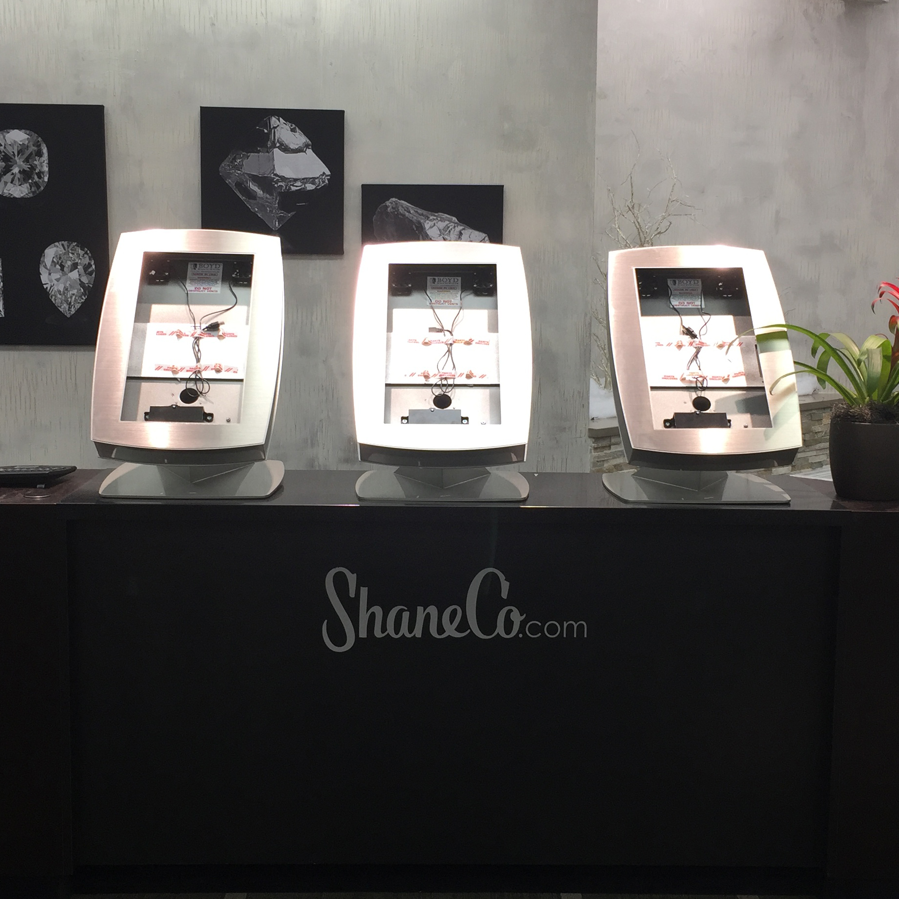
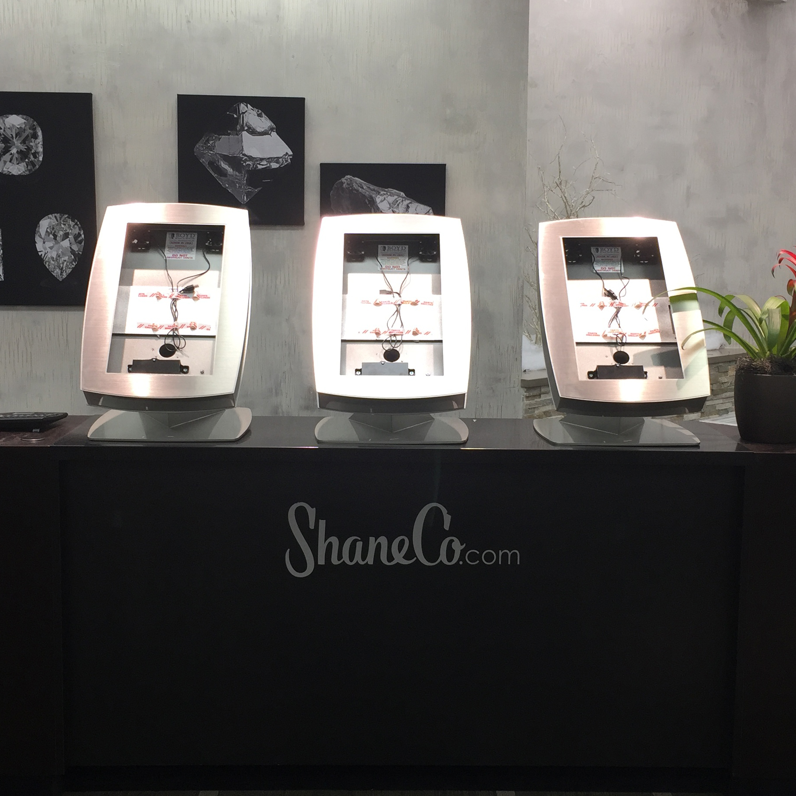

Interactive Content Specialist
Shane Co.
October 2014 - Present
- Content manager and developer for interactive media and in-store experience.
- Have organized and launched 164 in-store displays in over 20 locations nationwide.
- Project Managed and designed Interactive Kiosk. Worked with BOYD, Four Winds, Netsic, IT, and Creative department.
- Continue to organize and help oversee application development, displays, NUCs, customer and employee experience.
- Develop and design slides, videos, apps, and templates for displays.
- Have also participated in and collaborated with photography, video, art direction, design, etc.
- Train other employees how to use FWI Content Manager.

Lead Digital Retoucher
Lewis J. Advertising
May 2013 - October 2014
- Edited, composited, and formatted photographs for multiple medias using Photoshop CC.